帧来源live_raw_world_current_capture
响应combined_depth_ir_darkline
当前点数64
线族数[8, 8]
骨架组件107
梁筋候选0
判断
这不是替换主链的结果图。它是实例分割前的多模态探针：看哪些派生图能稳定把普通钢筋、梁筋、地板缝和 TCP 侵入拆开。
新 beam_candidate：本帧未形成稳定 beam_candidate。
旧梁筋 edge-band mask 对照：x:8..21 side=min，x:43..56 side=min，x:74..86 side=min，x:402..416 side=max。注意：旧方法不是实例分割，只能作为本报告的对照层。
图像
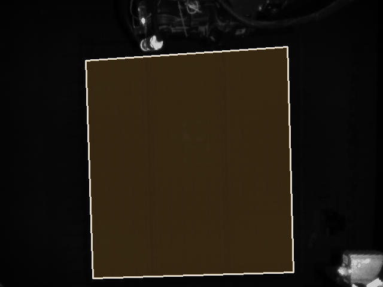
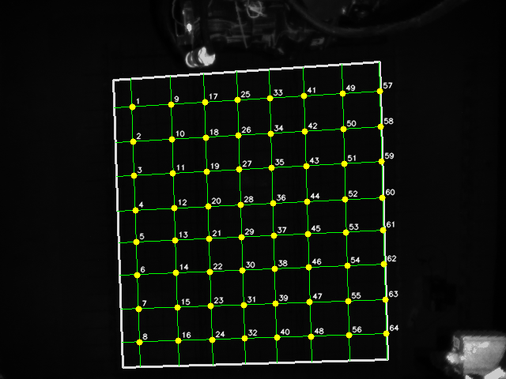
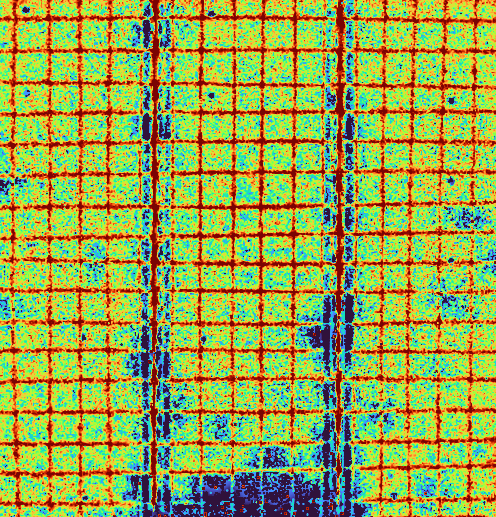
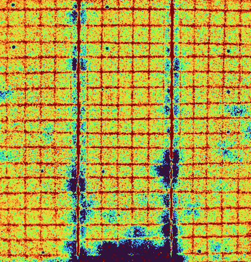
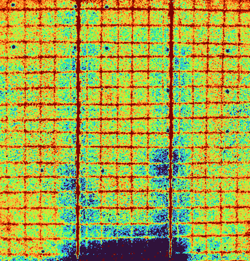
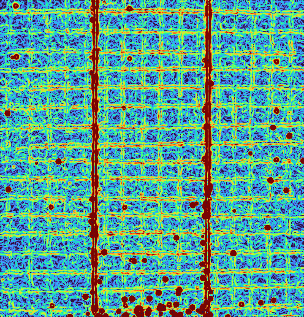
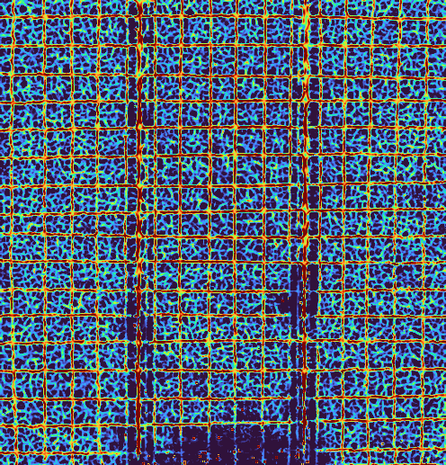
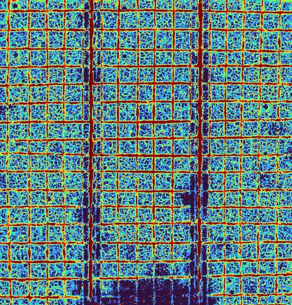
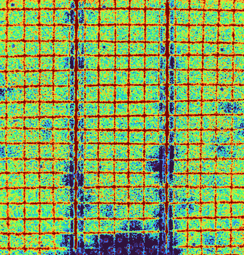
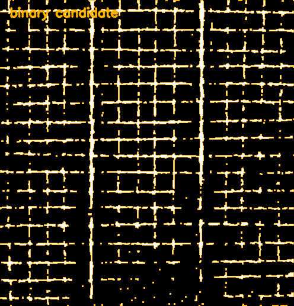

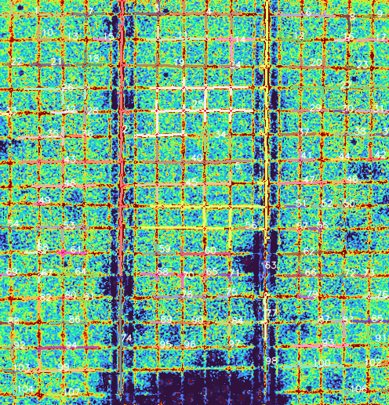
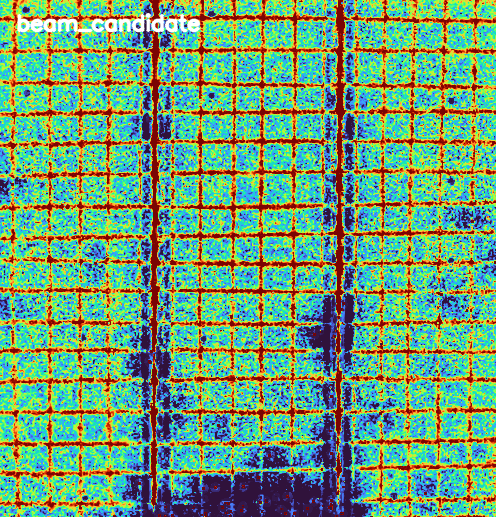
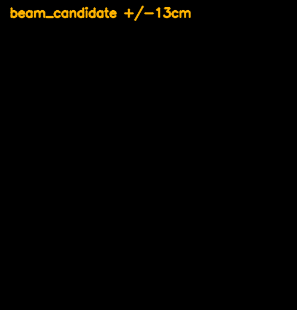
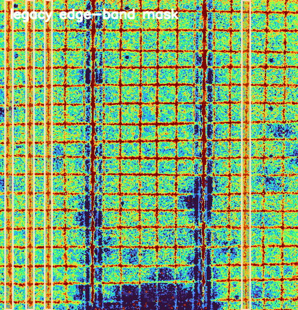
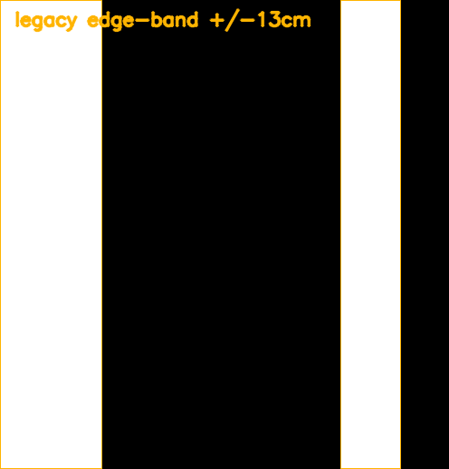